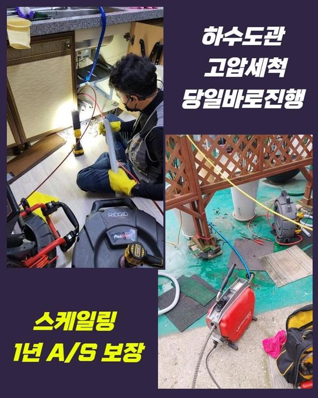
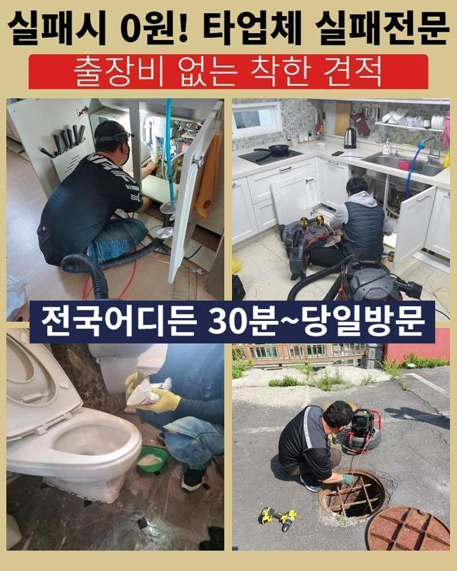
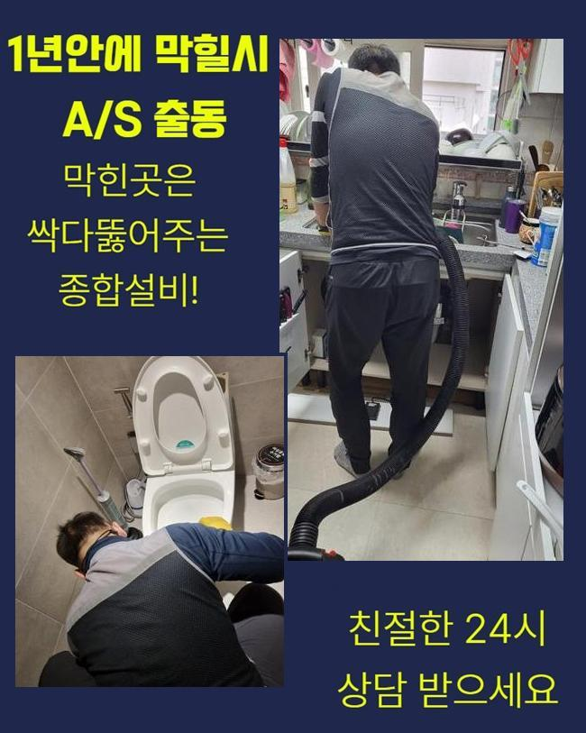
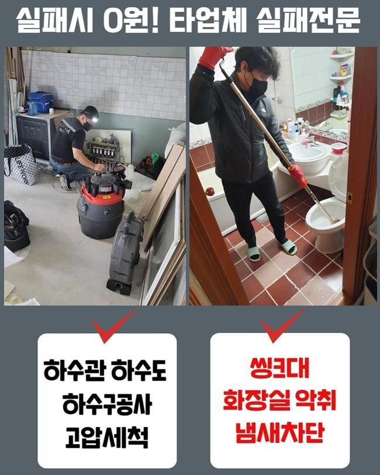
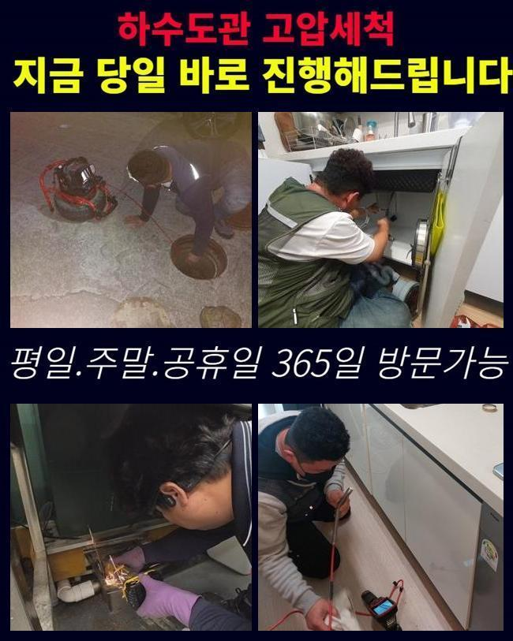
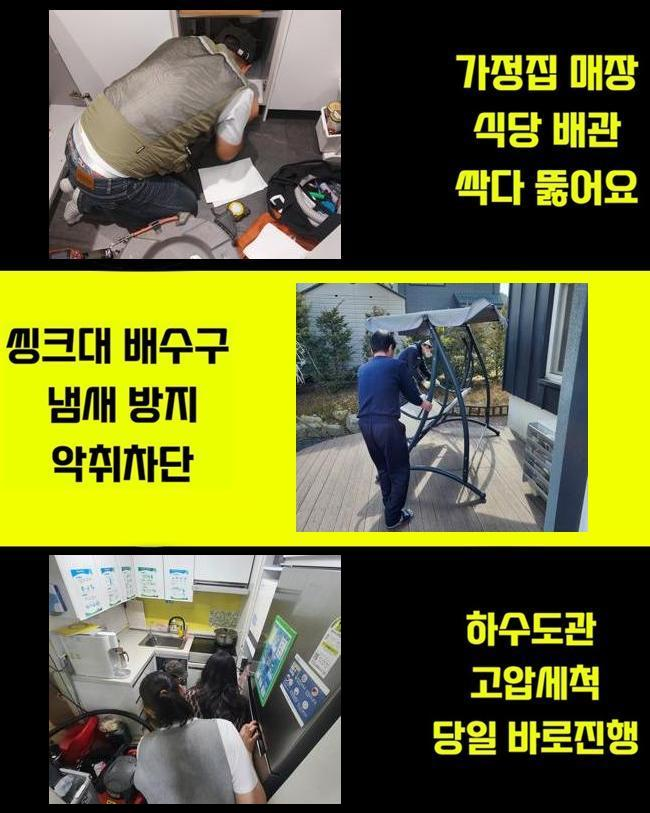

🏠 중앙동오수관뚫음 가수동 하수구뚫어주는업체 통수전문
용인 중앙동 하수구막힘 전문 시공 후기

📋 작업 개요
- 위치: 용인 중앙동, 중앙동, 용인
- 서비스 유형: 하수구막힘, 배관막힘, 누수수리, 뚫는업체, 배관청소, 고압세척
- 작업 일시: 2024. 8. 17. 16:14
- 업체명: 하수구수사대 (010-5615-2118)
🔍 문제 상황
용인 중앙동화장실하수구뚫음 모현면 하수구뚫는곳 물샘전문업체
아파트 중앙배관에 생긴 막힘 사건으로 인해서 고압세척기로 씻어드렸던 현장 개요를 공유할게요
모든 분들이 한 번 이상은 집안에 배치된 배수설비가 불통이 되는 상황을 마주하게 됩니다
오늘의 현장 역시도 메인 배관에 장애가 생겨서 많은 호실의 하수구가 불통되는 상황에 봉착하게 되었고 막힌 쪽이 점점 심화되다가 하수가 거꾸로 치솟아서 황급히 전화를 주셨어요
게다가 한 장소에만 머무르지않고 퍼져나가서 신속한 행동과 조치가 필요한 현장이라고 판단내리게 되었습니다
더 심각한 손상을 입히지 않으려면 얼른 고쳐야 한다는 결론에 도달하여 스케줄을 조정하여 내방을 해드린 후에 이번 하수구 막힘에 대한 정보를 검토해야 했습니다
일반적인 부엌의 특징은 생활용수의 사용량이 뛰어나고 조리를 하다보니까 음식 찌꺼기나 기름기가 미량 수돗물과 함께 떠내려갑니다
세척을 제대로 임하지 않으면 고착화된 음식 슬러지들이 새어나간 뒤 접착되어서 배수로가 점차 제한되어서 빠져나가는 속도가 굼떠지는 상황으로 나아가는 수순입니다
오염된 물이 솟구친다면 악취는 물론이고 해충까지 삶의 질을 떨어트리니 행동거지를 빠르게 하여 극복해 나가는 게 필요합니다
어디가 막혔나 보기위하여 내시경을 동원해서 관로를 관측해 보기로 결정했어요
보편적인 배수로는 직선구조가 아니라서 사람의 시력에 의존하기에는 다소 어려움이 존재하니 긴 노즐에 달린 카메라를 넣어서 다각도에서 점검을 거쳐야 합니다

🔎 원인 분석
💡 전문가 진단: 정밀 진단 장비를 사용하여 슬러지의 고착 여부를 판명하고 타격/세척 작업을 실시했습니다.
주방이 가장 심하기는 하지만 욕실 하수도도 물이 굼뜨게 처리된다는 점을 이어서 감지하게 됐습니다
물청소도 하고 샤워도 하는 등 한 번에 상당량을 쓰기 때문에 물빠짐이 시원치 않다면 습한 환경으로 불쾌감을 체감하는 문제입니다
배수로는 연결된 구조라 한 쪽에 문제가 생기더라도 조만간 여러 관로에서 막힘이슈가 계속해서 터질 수 있습니다
여러 호실로 연계되는 주요 배관이므로 정확도 높게 막힘이 탄생된 경로를 추적해서 소거해서 소통을 확보해야 했습니다
다세대 공통 배관의 경우는 주로 땅에 묻혀있기 때문에 그곳까지의 접근이 요구되다보니 더 세심하고 정확성 있게 탐지해야 합니다
정비를 이어가는 상황에서도 배수로에 데미지가 가지 않게 끝까지 안전에 유의해야 합니다
막혀있는 사안을 철저하게 끝내지 못한다면 재발과 같은 일들이 일어날 수 있는 부분이니 전문 내시경을 켜서 어디에서 문제가 발현됐는지 추적하는 단계가 필수입니다
스크린으로 확인해 보니 배관 속에 존재하는 유분기가 뭉친 게 막힘의 나타났을 거라 추정됐습니다
여러 장소에서 하수를 내려보내기 때문에 비례하여 물때도 엄청나게 집적될 수 있습니다
그렇기에 핵심 배관 안은 어마어마하게 뭉친 찌꺼기들이 빈틈 없이 응축되어 차올라 있는 모습이었습니다
가득 차올라 있다보니 더 세밀한 탐지를 위해서 내부 측으로 촬영기기를 이동시키려 했지만 꽉 찬 노폐물이 길을 내주지 않아서 더이상은 진입이 불가했기에 석션 흡입으로 입구 부근의 덩어리부터 삭제한 뒤 검사를 재개해야 했습니다

🔧 작업 과정
깊숙한 영역으로 가보니까 어마어마한 수준의 노폐물들이 누적됐고 가장 거대한 장애요소도 없애버렸습니다
좁은 배관로의 곳곳에 각종 이물질들이 뒤섞인 채 덩어리화가 되어버려 하수의 흐름 중단과 같은 문제가 연속적으로 유발될 수 있습니다
이물질이 범벅된 고형물은 아무리 물을 내려도 꿈쩍하지 않으니 가장 최적화된 전문 기기를 발동시켜야만 원상복구를 해줄 수 있습니다!
관찰을 열심히 해보니 더럽혀진 곳들이 많았고 끼인 슬러지 뭉텅이도 고밀착으로 응축이 된 상황이라 유연하게 움직이는 샤프트 기기를 통해 절단하는 업무를 해야합니다
배관 자체의 크기도 크다보니 여러가지 오염물이 빠져나가고 안에서 썩고 미생물이 번식해서 끔찍한 냄새도 났습니다
오래 누적되면 상황이 수렁에 빠질 수 있으니 물의 배출이 원만하지 못하면 즉시 행동으로 옮겨서 제자리로 돌려놓아야 안전합니다
잘못된 메인배관의 통로는 연결지점이기 때문에 이곳이 기능을 다하지 못하면 비단 한 곳이 아니라 여러 세대의 고충이 어쩔 수 없이 발발합니다
뭐가 문제인지를 고려해서 어떤 장비를 접목할지도 고심해서 선택해야만 더이상의 결함 발생 없이 하수구를 사용하실 수 있습니다
낱개로 분리된 형태가 아니고 계속해서 응집하다보니 돌처럼 고정되다보니 복잡하다 싶었습니다
제거하기 쉽게 풀어주려면 강력한 힘이 필요한데 활용도나 기능이 뛰어난 플렉스 샤프트 장치나 세척력을 극대화한 고압세척기를 주로 씁니다
옥외의 배관 가운데 막힌 수준이 상당한 관로는 고압수 세척으로 처리를 해주고 있고 기름기를 풀어주기 위해서는 따뜻한 물을 공급해서 타겟에 발사해서 원만히 풀어내는 경우도 있어요
물대포가 상당한 힘이 있어서 따로 진행하는 파쇄 단계를 해주지 않아도 장애물을 가볍게 치워낼 수 있답니다
고압으로 뭉친 물로 내부 환경을 정돈하니 관로 벽과 한몸이 됐던 잔여물이 싹 사라졌고 튼튼했던 석회 덩어리도 작은 조각으로 나뉘어져서 결합이 풀렸습니다
그러자 고인 물도 서서히 나가면서 기능 복구를 성공했습니다
설령 이전업체에서 실패했어도 처리를 해드리는 곳이다보니 난관에 부딪혔다고 해도 막막함을 느끼지 않고 처리를 해드리고 있습니다
메인 파이프 안으로도 하수가 내려오는 장면을 한눈에 볼 수 있었으나 내시경을 재차 보며 마무리 전 확인을 해보았어요
배수로 통째로 최종점검했고 집 곳곳의 배수 구멍에서도 물이 더이상 고이지 않는지 하수 처리를 시도해봤어요


✅ 작업 완료
오랜 이물질의 누적으로 잔뜩 막혀있던 배수로가 시원하게 개통되었습니다
마무리로 진단을 해줘도 오염물이 덕지덕지 붙었던 곳들이 청정한 환경이 되어서 옆에 계셨던 고객분도 편한 표정을 지어주셨습니다
변화한 배관의 환경을 어찌 깨끗하게 관리하는지에 대한 팁도 친절하게 안내하였습니다
또다른 막힘이 생기지 않게 철두철미하게 체크해 드렸으니 원활한 하수구의 운행을 누리실 수 있을 것입니다
관련한 질문이 있다면 컨택해 주시기 바랍니다




⚠️ 베란다 누수 및 방수 관리 방법
- ✅ 비가 많이 올 때 창틀 주변이나 아래층 천장에 얼룩이 생기는지 정기적으로 확인해 보세요.
- ✅ 우수관 주변 실리콘 마감이 들뜨거나 깨진 틈새가 있는지 손상 여부를 수시로 체크하세요.
- ✅ 베란다 바닥 타일의 줄눈(메지)이 소실되면 그 틈으로 물이 침투하여 누수가 유발됩니다.
- ✅ 누수 의심 증상 발견 시 방치하면 아래층 손실이 커지므로 즉시 전문가의 진단을 받으십시오.
💡 핵심 정리
- 확실한 장비 작업(내시경 점검 및 샤프트 스케일링)으로 원인을 뿌리 뽑습니다.
- 작업 후 1년 이내에 동일한 부위 재발 시 100% 무상 A/S 서비스를 보장합니다.
- 서울 · 경기 · 인천 전 지역에 24시간 언제든 긴급 출동할 수 있도록 항시 대기 중입니다.
❓ 자주 묻는 질문 (FAQ)
🚨 용인 중앙동 하수구막힘 문제로 고민이신가요?
정확한 원인 진단과 확실한 시공으로 재발 없는 해결을 약속드립니다.
24시간 긴급 출동 | 서울 · 경기 · 인천 전지역 | 1년 내 재발 시 무상 A/S